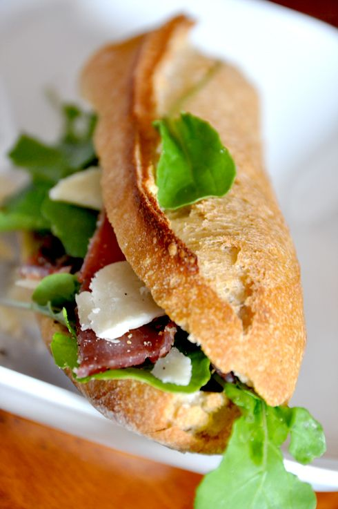

Sandwich

Description
Today was lunch on the go, lunch on the grass, what a picnic BUT... especially in the shade... oh yes in the shade,
because with this crushing heat, we all sought freshness!!! Here it rhymes! ;)
So at noon, I wanted something "light", "fresh", but also "tasty" like this parma ham sandwich
decorated with pretty rocket leaves and ... tutti quanti, what I prepared this morning in the blink of an eye
Ingredients
- 1 chopstick
- slices of parma ham
- 8 candied cherry tomatoes
- 20g pesto
- 50 g of parmesan
- 15g butter
- 1 C. olive oil
Steps
- Cut the baguette in half, open the ½ baguettes in half and spread pesto
on each side (mixture of basil, garlic, pine nuts).
- With a peeler, make shavings of parmesan.
- Arrange inside the ½ baguettes, a few rocket leaves, a chiffonade of Parma ham, the pieces of
candied tomatoes and a few shavings of parmesan
and close the sandwich, it's quick to make and it's ready to be devoured Yum !
return to the top
Return to main page